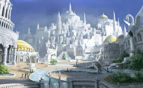
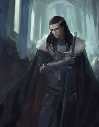
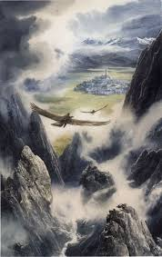
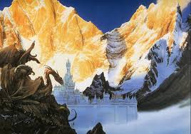

Gondolin était une cité elfique cachée, située approximativement au centre du Beleriand, en Terre du Milieu.
Elle fut fondée par Turgon le Sage, un roi Ñoldorin, à la fin du Premier Âge.
De tous les royaumes Ñoldorins en exil, elle connut la plus longue existence, durant près de quatre siècles, au cours des Années du Soleil.
Son peuple était les Gondolindrim.
Pour en lire plus, accédez ici.
| Mini-destinations | Photos | Description |
|---|---|---|
| Palais de Gondolin |  |
 Ici vit Turgon, roi de Gondolin. |
| Passage secret de Gondolin |  |
Il est quasiment impossible de trouver le passage secret pour entrer en Gondolin. Les forces de Morgoth sont entrées par les montagnes alentours. |
| Montagnes de Gondolin |  |
Les montagnes entourant Gondolin sont majestueuses, mais très dangereuses ; parcourez-les avec précaution! |